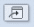

The recorder terminal displays when you click this icon. This function can only be used in the "Service" and "Research and Development" modes and only if the recorder is connected to the workstation by Ethernet.
Copyright © 2016 Heidelberger Druckmaschinen AG